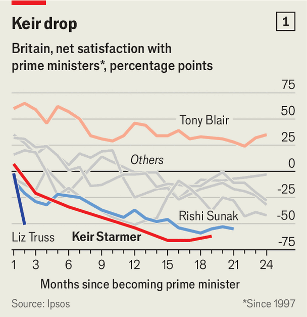

Britain | A zombie prime minister
Sir Keir Starmer clings to office—but not power
His leadership crisis is about more than just Peter Mandelson
February 12th 2026
The prime minister has survived the most perilous moment of his time in office. On February 9th Anas Sarwar, the leader of Scottish Labour, became the most senior figure in the party to call for Sir Keir Starmer to resign. But cabinet ministers rallied around their boss, potential rivals blinked and Sir Keir gave a fighting talk to his MPs. The crisis cost Sir Keir two top advisers: Morgan McSweeney, his chief of staff, and Tim Allan, his communications director. Sir Chris Wormald, the cabinet secretary, is on his way out, too.

Sir Keir is the most unpopular British prime minister since records began, his ratings even worse than Liz Truss’s during her 49-day stint in office (see chart 1). He is the sick man who cannot afford to catch a cold. That is why the scandal around Peter Mandelson’s relationship with the convicted child sex offender Jeffrey Epstein has been so destabilising. Sir Keir’s decision to appoint Lord Mandelson as Britain’s ambassador to America left him perilously exposed once fresh revelations emerged. Though Sir Keir sacked Lord Mandelson in September, files released recently have revealed the extent of the former cabinet minister’s friendship with Epstein—including evidence that he appeared to share confidential government information during the global financial crisis. Sir Keir has apologised for believing Lord Mandelson’s “lies”.
The task of governing was always going to be hard. Like many other rich democracies, Britain struggles with sluggish economic growth and an increasingly hostile American administration. In addition, Sir Keir inherited creaking public services and looming crises in social care and special-education funding.
Now he is paying the price for years of political manoeuvring. He was elected leader of the Labour Party as a successor to the hard-left Jeremy Corbyn, promising to keep Mr Corbyn’s radicalism without his incompetence. Instead, in opposition Sir Keir expelled his socialist predecessor and avoided any policy announcements that might attract criticism.
In government, his approach changed again. Fearing the rise of right-wing populist Reform UK, the prime minister adopted a tough posture on immigration. This proved unpopular with his own voters. For the past year Sir Keir has styled himself as more of a technocrat (all the while pushing through left-wing legislation, for example on workers’ rights). After a dramatic week of crisis for his leadership, yet another iteration of Sir Keir is likely: as a tribune of Labour’s soft-left backbenchers.
His pivots helped Labour secure a thumping parliamentary majority (albeit on a small share of the vote), but they did little to prepare the party for government. Labour pledged not to increase taxes on “working people”, but taxes are expected to rise to the highest levels since the 1940s. The party claimed it would stop the arrival of migrants crossing the channel in small boats; the numbers are higher than when Sir Keir took office. A lack of realism in advance means the government has no mandate for difficult choices in office. Sir Keir’s own MPs—never sold on a Starmerite project—have turned into a rebellious bunch. Unpopular policies incur political damage before (too often) being abandoned.
The problem is compounded by a dysfunctional operation in Downing Street. MPs and ministers privately complain that the prime minister’s team is both overbearing and erratic. In 19 months Sir Keir has lost two chiefs of staff, four directors of communications and 11 ministers. With no coherent project or ideology to fall back on, the prime minister has appeared to be paralysed by events, often outsourcing strategy to Mr McSweeney.
Voters are left feeling that nothing has changed. As the cost of living spiralled from 2021 onwards, Britons despaired at a Conservative government which was consumed by scandals and infighting. Sir Keir’s pitch in 2024 was that it was time to end the chaos and “put the country first”. Yet the disorder has continued. At the height of this week’s leadership drama on February 9th a former Conservative minister in the May and Johnson years said: “I’m getting terrible flashbacks. Awful. Repressed memory syndrome.”
Almost half of Labour’s 2024 voters now say they would vote for another party. Nigel Farage’s Reform has led every opinion poll since May 2025. Scared of losing their jobs, many Labour MPs are openly mooting the end of Sir Keir’s premiership.
In the short term he is helped by the lack of an obvious successor. Prospective challengers need to secure the support of one-fifth of Labour MPs (81 of them) before the matter goes to a ballot of the party’s members. Wes Streeting, the health secretary and figurehead of the Labour right, is suspected of preparing a leadership bid—though he denies it. On February 9th he released a transcript of messages with Lord Mandelson, to neutralise criticism of his proximity to the disgraced peer. The messages include a number of swipes at his own government, (conveniently) including statements that might endear him to Labour members.

The punters’ favourite is Angela Rayner, Sir Keir’s former deputy (see chart 2). A campaign website for Ms Rayner briefly appeared online in January, though she dismissed it as a fake. The working-class northerner is popular with grassroots members but remains under investigation by tax authorities. Andy Burnham, the Manchester mayor who is popular among party members, cannot stand because he is not an MP. Ed Miliband, the energy secretary, has told journalists that his previous experience as Labour leader has “inoculated” him from ever wanting to stand again.
So, for now, Sir Keir will struggle on, doubling down on left-wing policies to maintain the support of his MPs. Backbenchers now reason that they stand to benefit from a weak and malleable prime minister, especially with Mr McSweeney (whose political instincts were at odds with many of theirs) out of the way.
Local elections on May 7th could bring renewed peril for the prime minister. More damaging information might emerge from the documents relating to Lord Mandelson’s appointment, which the government has agreed to release. Already, a fresh scandal has emerged over Matthew Doyle, another of Sir Keir’s former communications directors, and his links to a child-sex-offender Labour councillor.
Few in Labour are calling on the party to confront hard problems, such as soaring welfare spending. Given the government’s huge majority, a general election is unlikely soon. So more Labour drift and drama beckon—to the dismay of voters, who were promised something better. ■
For more expert analysis of the biggest stories in Britain, sign up to Blighty, our weekly subscriber-only newsletter.